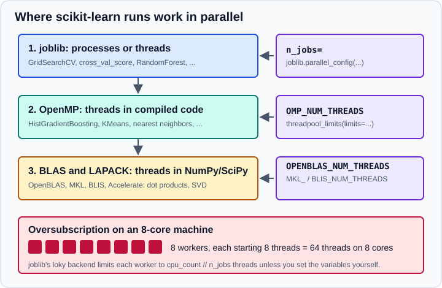

Performance and Parallelism in scikit-learn
|
This content was generated with the assistance of AI and should be verified against the official documentation before being relied on in production. |
Most scikit-learn models are fast enough that performance never needs a thought, until a grid search takes the whole night, a service misses its latency budget, or a server with 64 cores runs slower with more workers. This page explains where scikit-learn runs code in parallel (and the three different switches that control it), how to avoid starting too many threads, what determines prediction latency and throughput, and how to train on data that does not fit in memory. It targets scikit-learn 1.9 (1.9.1 at the time of writing) with NumPy 2.5, SciPy 1.18 and joblib 1.6, and was checked in October 2026. Examples target Python 3.13 or 3.14 and were run on Python 3.13. The examples were run with Python 3.13 on a 10-core Apple-silicon laptop; the printed output is the real output, but timings depend on the machine and should be read as orders of magnitude, not as benchmarks.
For training-time tuning of hyperparameters (and a cheaper alternative to a full grid), see Grid, Randomized & Halving Search. For pandas-side speed-ups see Enhancing Performance in pandas and Scaling to Large Datasets.
Three layers of parallelism
An estimator can use up to three independent mechanisms, sometimes at different points of fit and predict. Each has
its own control, which is the most common source of confusion.

| Layer | Used by | Controlled by |
|---|---|---|
joblib (processes or threads) |
Meta-estimators and utilities that run independent tasks: |
The |
OpenMP (threads) |
scikit-learn’s own compiled code: |
The |
BLAS and LAPACK (threads) |
Linear algebra inside NumPy and SciPy: matrix products, SVD, |
|
The official documentation states two rules worth memorising. First, n_jobs always controls the amount of parallelism
managed by joblib, and only that. Second, thread-level parallelism in OpenMP code or BLAS is controlled by environment
variables or threadpoolctl. The user guide also admits that exactly where each estimator parallelises with n_jobs is
"currently poorly documented", so check the n_jobs entry in the estimator’s API reference and measure.
joblib and n_jobs
n_jobs=None (the usual default) means one worker unless a joblib context says otherwise, and n_jobs=-1 means all
logical cores. The default backend is loky, a multi-process backend. To avoid copying a large array into every worker,
joblib memory-maps arrays bigger than 1 MB so the processes share them. When the parallel code releases the GIL,
scikit-learn asks joblib for threads instead. A few practical consequences:
-
Start-up cost. The first parallel call spawns worker processes and is noticeably slower; later calls reuse the pool.
n_jobs>1is therefore slower than serial for tiny tasks. -
More workers are not always faster. The user guide advises experimenting rather than assuming.
-
The backend can be overridden for a block of code with a context manager, regardless of what scikit-learn recommends. The user guide shows
parallel_backend('threading', n_jobs=2); joblib’s newerparallel_configdoes the same and is used below.
import time
from joblib import parallel_config
from sklearn.datasets import make_classification
from sklearn.ensemble import RandomForestClassifier
from sklearn.model_selection import cross_val_score
X, y = make_classification(n_samples=20_000, n_features=40, random_state=0)
rf = RandomForestClassifier(n_estimators=200, random_state=0)
def timed(label, **kw):
t0 = time.perf_counter()
s = cross_val_score(rf, X, y, cv=5, **kw).mean()
print(f"{label:34s} accuracy={s:.4f} {time.perf_counter() - t0:5.1f}s")
timed("cross_val_score n_jobs=None")
timed("cross_val_score n_jobs=-1", n_jobs=-1)
with parallel_config(backend="threading", n_jobs=4):
timed("threading backend, 4 workers")Output:
cross_val_score n_jobs=None accuracy=0.8934 41.7s cross_val_score n_jobs=-1 accuracy=0.8934 11.6s threading backend, 4 workers accuracy=0.8934 18.8s
The accuracy is identical in all three runs: parallelism changes how long the computation takes, not its result (the
random forest’s random_state fixes the trees). Here 10 processes cut 41.7 s to 11.6 s, which is far from 10 times
faster because there are only 5 folds, so at most 5 of the 10 workers have work at any moment, and the first call pays
the worker start-up cost. The threading backend with 4 workers sits in between.
Where the parallelism sits matters for a nested structure. In GridSearchCV(..., n_jobs=-1) over a forest, joblib runs the
fits of the grid in parallel and each forest could also use n_jobs; give the parallelism to the outer loop (the
grid) and leave the inner estimators at n_jobs=None.
OpenMP and BLAS threads
OpenMP code uses by default as many threads as there are logical cores. Limit it from the shell with
OMP_NUM_THREADS:
OMP_NUM_THREADS=4 python my_script.pyBLAS and LAPACK libraries have their own variables (MKL_NUM_THREADS, OPENBLAS_NUM_THREADS, BLIS_NUM_THREADS), and
they can also be influenced by OMP_NUM_THREADS. To see what your installation really does, the user guide suggests
running threadpoolctl from a shell for several values of OMP_NUM_THREADS:
OMP_NUM_THREADS=2 python -m threadpoolctl -i numpy scipyInside Python, threadpoolctl both reports and limits the thread pools at run time, which is more precise than an
environment variable because it can be scoped to a block of code.
from threadpoolctl import threadpool_info, threadpool_limits
import numpy as np, scipy, sklearn # noqa: F401 (loads the native libraries)
for lib in threadpool_info():
print(lib["user_api"], lib["internal_api"], lib["num_threads"], lib["filepath"].split("/")[-1])
with threadpool_limits(limits=1):
print("inside:", {l["internal_api"]: l["num_threads"] for l in threadpool_info()})
print("after: ", {l["internal_api"]: l["num_threads"] for l in threadpool_info()})Output:
openmp openmp 10 libomp.dylib
inside: {'openmp': 1}
after: {'openmp': 10}
On this macOS machine only an OpenMP pool was reported and no BLAS pool, so the OPENBLAS_NUM_THREADS family of
variables would have had nothing to control. On Linux with pip wheels you would typically also see an OpenBLAS entry. The package that
provides BLAS depends on how NumPy was installed: the user guide notes (as of 2022) that PyPI wheels and the conda-forge
channel use OpenBLAS, while the defaults channel of Anaconda uses MKL. Another variable, SKLEARN_PAIRWISE_DIST_CHUNK_SIZE,
tunes chunking in OpenMP pairwise-distance kernels and is an advanced setting.
Oversubscription
Oversubscription means running many more threads than CPU cores, which adds scheduling overhead instead of speed. The
standard case is a GridSearchCV with n_jobs=8 over a HistGradientBoostingClassifier on an 8-core machine: every one
of the 8 workers starts an OpenMP pool of 8 threads, 64 threads in total.
scikit-learn and joblib protect you in most cases:
-
With the default loky backend (joblib 0.14 or later) each worker is told to use at most
cpu_count // n_jobsthreads through the environment variables above, so the example above runs one thread per worker. -
Every scikit-learn estimator that relies on OpenMP in its Cython code uses
threadpoolctlinternally to adapt the number of OpenMP threads and any nested BLAS threads.
The protection has exceptions:
-
A variable you set yourself wins. If you export
OMP_NUM_THREADS(or the BLAS ones), joblib’s limit does not apply, and the total becomesn_jobs * <LIB>_NUM_THREADS. The limit also applies to your main process. -
The threading backend has no protection. With
parallel_config(backend="threading")nothing prevents native libraries inside the threads from starting their own pools.
A reasonable policy for a shared server is: give one layer all the cores and keep the others at one. For example, set
n_jobs on the outer search and leave the inner estimators single-threaded (threadpool_limits(limits=1)), or run a
single process and let OpenMP use all cores.
Free-threaded Python
scikit-learn 1.6 added preliminary support for free-threaded CPython (the experimental build without the GIL), and
free-threaded wheels are available for all supported platforms. It is experimental, and the project invites reports of
issues. In the upcoming 1.10 release (not yet released), LogisticRegressionCV is documented as faster on free-threaded
Python when it uses parallelism, except with the "sag" and "saga" solvers. For production, the multi-process loky
backend remains the default and the best tested choice.
Prediction latency and throughput
For a service, latency (time for one prediction, usually judged at a percentile such as the 90th) and throughput (predictions per second) matter more than training time, since training usually runs offline. The user guide lists what determines latency: the number of features, the input data representation and sparsity, the model complexity, the feature extraction cost, and whether predictions are made in bulk or one at a time. Simpler models are faster but may be less accurate, so every speed-up must be re-validated.
Bulk against atomic prediction
Predicting many rows in one call is much faster than one call per row, for reasons such as branch prediction, CPU cache and vectorised linear algebra. The official example reports one to two orders of magnitude; this example measures it.
import time
import numpy as np
from sklearn.datasets import make_classification
from sklearn.ensemble import RandomForestClassifier
from sklearn.linear_model import LogisticRegression
X, y = make_classification(n_samples=5000, n_features=20, random_state=0)
for model in (LogisticRegression(max_iter=1000), RandomForestClassifier(n_estimators=100, random_state=0, n_jobs=1)):
model.fit(X, y)
sample = X[:300]
t0 = time.perf_counter()
for row in sample: # atomic mode: one call per instance
model.predict(row.reshape(1, -1))
atomic = time.perf_counter() - t0
t0 = time.perf_counter()
model.predict(sample) # bulk mode: one call for all instances
bulk = time.perf_counter() - t0
print(f"{type(model).__name__:24s} atomic {atomic/len(sample)*1e6:8.0f} us/row bulk {bulk/len(sample)*1e6:7.1f} us/row ratio {atomic/bulk:6.0f}x")Output:
LogisticRegression atomic 38 us/row bulk 0.2 us/row ratio 220x RandomForestClassifier atomic 1526 us/row bulk 9.6 us/row ratio 159x
Each single-row call pays input validation and Python overhead (about 38 microseconds for the linear model and about 40 times that for the forest), which bulk mode amortises. If a service receives requests one at a time, collecting a few milliseconds of requests into a micro-batch can multiply throughput.
Skipping the finiteness check
By default every predict call checks that the input has no NaN or infinity, which is a full pass over the data. If you
guarantee clean input, you can switch the check off with the assume_finite configuration, globally (set_config, or the
SKLEARN_ASSUME_FINITE environment variable set before importing scikit-learn) or for a block with config_context.
working_memory limits the temporary memory (in MiB, default 1024) of chunked computations such as
pairwise_distances_chunked.
import time
import numpy as np
import sklearn
from sklearn import get_config
from sklearn.datasets import make_classification
from sklearn.linear_model import LogisticRegression
X, y = make_classification(n_samples=200_000, n_features=100, random_state=0)
clf = LogisticRegression(max_iter=200).fit(X[:5000], y[:5000])
print({k: get_config()[k] for k in ("assume_finite", "working_memory")})
def run():
t0 = time.perf_counter()
for _ in range(20):
clf.predict(X)
return time.perf_counter() - t0
default = run()
with sklearn.config_context(assume_finite=True):
print("inside:", get_config()["assume_finite"])
fast = run()
print("after :", get_config()["assume_finite"])
print(f"default {default:.2f}s assume_finite {fast:.2f}s")
X_bad = X[:5].copy(); X_bad[0, 0] = np.nan
try:
clf.predict(X_bad)
except ValueError as e:
print("ValueError:", str(e).splitlines()[0])
with sklearn.config_context(assume_finite=True):
print("with assume_finite the NaN is not caught:", clf.predict(X_bad))
with sklearn.config_context(working_memory=128):
print("working_memory:", get_config()["working_memory"])Output:
{'assume_finite': False, 'working_memory': 1024}
inside: True
after : False
default 0.10s assume_finite 0.05s
ValueError: Input X contains NaN.
with assume_finite the NaN is not caught: [0 1 1 1 1]
working_memory: 128
Halving the time of a very fast prediction is a real gain for a service, but look at the second half of the output: with
assume_finite=True a NaN row is not rejected, it silently produces a prediction. Use the setting only after
validating input yourself, and only around the prediction call (the context manager restores the previous value on exit).
The setting affects every use of assert_all_finite inside the block.
Number of features and sparse input
Memory and the number of arithmetic operations both grow with the number of features, and prediction time grows at least linearly with it. SciPy sparse matrices (CSR or CSC) store only the non-zero entries (on average one 32-bit index plus the 64-bit value per entry, plus 32 bits per row or column), and a linear model needs only as many multiply-adds as there are non-zeros: 100 non-zeros in a million dimensions need 100 operations, not a million. Dense arrays, on the other hand, use optimised BLAS and multithreading and cause fewer cache misses, so sparse input only wins when the data is very sparse. The user guide’s rule of thumb is that about 10% non-zeros at most (a sparsity ratio above 90%) is where sparse becomes faster on a multi-core machine with a tuned BLAS, to be checked on your hardware.
import numpy as np
from scipy import sparse
from sklearn.datasets import make_classification
from sklearn.linear_model import SGDClassifier
def sparsity_ratio(X):
return 1.0 - np.count_nonzero(X) / float(X.shape[0] * X.shape[1])
X, y = make_classification(n_samples=2000, n_features=500, n_informative=20, random_state=0)
X[np.abs(X) < 1.5] = 0.0 # make the input sparse
print("input sparsity ratio:", round(sparsity_ratio(X), 3))
X_csr = sparse.csr_matrix(X)
csr_bytes = X_csr.data.nbytes + X_csr.indices.nbytes + X_csr.indptr.nbytes
print(f"dense {X.nbytes / 2**20:.1f} MiB CSR {csr_bytes / 2**20:.2f} MiB")
clf = SGDClassifier(penalty="elasticnet", alpha=0.01, l1_ratio=0.9, random_state=0).fit(X_csr, y)
print("non-zero coefficients:", np.count_nonzero(clf.coef_), "of", clf.coef_.size, type(clf.coef_).__name__)
before = clf.predict(X_csr)
clf.sparsify()
print("after sparsify():", type(clf.coef_).__name__, clf.coef_.nnz, "stored values")
print("same predictions:", np.array_equal(before, clf.predict(X_csr)))
clf.densify()
print("after densify():", type(clf.coef_).__name__)Output:
input sparsity ratio: 0.846 dense 7.6 MiB CSR 1.77 MiB non-zero coefficients: 110 of 500 ndarray after sparsify(): csr_matrix 110 stored values same predictions: True after densify(): ndarray
This example also shows model compression, which in scikit-learn applies to linear models only. An elastic-net
penalty with a high l1_ratio drives many coefficients to exactly zero (110 of 500 remain), and sparsify() converts
coef_ to a sparse matrix, which reduces memory on a production server and, combined with sparse input, can cut latency
(the user guide reports a decrease of more than 30% on synthetic data with both sparse; your mileage will vary).
densify() converts back. Predictions are unchanged.
One caution found while preparing this page: with scikit-learn 1.9.1 and SciPy 1.18.1, calling predict with sparse
input on an SGDRegressor after sparsify() raised a ValueError about the shape of the sparse coefficient (the same
call on SGDClassifier worked, and predict with dense input worked on both). Test the sparsified model with the input
type you will really serve.
Model complexity
The decision function evaluated at prediction time depends on the model family:
-
Linear models (
Lasso,ElasticNet,SGDClassifier,Ridge,LinearSVC,LogisticRegression) all compute a dot product, so their latency is about the same; sparsity of the coefficients is what lowers it. -
Non-linear SVMs (
SVC,SVR,NuSVC,NuSVR) scale with the number of support vectors, linearly and also with the cost of the kernel. Fewer support vectors means faster prediction (thenuparameter ofNuSVRinfluences it). -
Tree ensembles (random forests, gradient boosting, extra trees) scale linearly with the number of trees and with their depth.
Decreasing complexity can reduce accuracy: a non-linearly separable problem handled by a fast linear model will probably lose predictive power. Measure both.
Feature extraction often dominates
Most scikit-learn models are fast, implemented in Cython or optimised libraries. In many applications the feature
extraction (turning rows, text or packets into arrays) takes most of the time: the user guide cites 100 to 500 times the
prediction time for a text-classification task. Profile the whole pipeline, not just predict, before optimising the
model. See Feature Extraction: Text, Dicts & Hashing.
Throughput and scaling out
The numbers above are for one process. To raise throughput, run more processes (in Python, because of the GIL) that share the same model, for example several workers of an application server, and add machines if needed. The user guide treats the details as out of scope. Loading the model with joblib’s memory mapping (see Model Persistence and Security) lets the processes share the array memory.
Linear algebra libraries
scikit-learn relies on NumPy and SciPy, so those must be built against an optimised BLAS and LAPACK (OpenBLAS in PyPI wheels, MKL, or Apple Accelerate and vecLib on macOS). Not all models benefit: randomised decision trees and kernel SVMs do not rely on BLAS in their inner loops, while a linear model implemented with a BLAS matrix product gains orders of magnitude from a tuned one. To see what your installation uses:
python -c "import sklearn; sklearn.show_versions()"On the machine used here the relevant part of the output was:
Python dependencies:
sklearn: 1.9.1
numpy: 2.5.4
scipy: 1.18.1
pandas: 3.1.0
matplotlib: 3.11.2
joblib: 1.6.0
threadpoolctl: 3.7.0
narwhals: 2.28.0
Built with OpenMP: True
narwhals appears here because it became a required dependency in scikit-learn 1.9. show_versions also lists the
threadpool information, which is what to attach to a performance bug report.
Strategies to scale to bigger data
When the data no longer fits in memory, scikit-learn supports out-of-core (incremental) learning for estimators that
implement partial_fit. The user guide describes a three-part pipeline: stream instances in mini-batches from disk, a
database or a network; extract features with a stateless method; and learn incrementally.
-
Streaming. A reader yields batches; how you implement it is up to you.
-
Stateless feature extraction. A vectoriser that must see the whole vocabulary first (
CountVectorizer) needs one full pass. When the feature set is not known in advance, use the hashing trick:sklearn.feature_extraction.text.HashingVectorizerfor text andsklearn.feature_extraction.FeatureHasherfor categorical dictionaries. They map features to a fixed number of columns without storing a vocabulary. In the user guide’s out-of-core text example, vectorisation costs much more than learning. -
Incremental learning. Estimators with
partial_fitlearn from one mini-batch at a time. For classifiers pass all possible classes to the first call withclasses=, because later batches may not contain every class.
| Task | Estimators with partial_fit (in sklearn.) |
|---|---|
Classification |
|
Regression |
|
Clustering |
|
Decomposition and feature extraction |
|
Preprocessing |
|
import numpy as np
from sklearn.cluster import MiniBatchKMeans
from sklearn.decomposition import IncrementalPCA
from sklearn.feature_extraction.text import HashingVectorizer
from sklearn.linear_model import SGDClassifier
from sklearn.preprocessing import StandardScaler
rng = np.random.default_rng(0)
good = ["great", "excellent", "love", "perfect", "fast"]
bad = ["awful", "broken", "hate", "slow", "refund"]
filler = ["the", "a", "product", "arrived", "it", "was", "and", "very", "my", "order"]
def stream(n_batches, batch_size=500):
"""Stands in for a reader that yields mini-batches from disk or a database."""
for _ in range(n_batches):
labels = rng.integers(0, 2, batch_size)
docs = [" ".join(rng.choice(filler, 6).tolist() + rng.choice(good if lab else bad, 2).tolist()) for lab in labels]
yield docs, labels
vectorizer = HashingVectorizer(n_features=2**18, alternate_sign=False) # stateless: no vocabulary
clf = SGDClassifier(random_state=0)
classes = np.array([0, 1]) # needed on the first call
for i, (docs, labels) in enumerate(stream(8)):
clf.partial_fit(vectorizer.transform(docs), labels, classes=classes)
test_docs, test_labels = next(stream(1, 2000))
print("holdout accuracy:", round(clf.score(vectorizer.transform(test_docs), test_labels), 3))
# numeric streams: scaler, PCA and k-means all have partial_fit
scaler, ipca, km = StandardScaler(), IncrementalPCA(n_components=2), MiniBatchKMeans(n_clusters=3, random_state=0, n_init=3)
for _ in range(10):
batch = rng.normal(size=(1000, 5)) + rng.integers(0, 3, (1000, 1)) * 4
scaler.partial_fit(batch)
ipca.partial_fit(scaler.transform(batch))
km.partial_fit(batch)
print(scaler.n_samples_seen_, ipca.n_samples_seen_, ipca.explained_variance_ratio_.round(2), km.cluster_centers_.shape)Output:
holdout accuracy: 1.0 10000.0 10000.0 [0.93 0.02] (3, 5)
The synthetic text is trivially separable, hence the perfect accuracy; the point is the structure of the loop. Notes:
-
Mini-batch size needs tuning: it trades the relevance of each update against the memory footprint.
SGD*and the discrete Naive Bayes classifiers are truly online and unaffected by batch size, whereasMiniBatchKMeansconverges differently depending on it. -
Noisy labels.
Perceptronstays sensitive to badly labelled examples; theSGD*family is more robust but may give too little weight to late, correct examples because its learning rate decays. -
Scale incrementally too.
StandardScaler.partial_fitaccumulates the mean and variance over batches (n_samples_seen_above); do not fit a fresh scaler on every batch. -
Evaluate on a held-out set that is not part of the stream.
-
When the data fits in memory but is slow, other levers are a simpler model, fewer features (Feature Selection),
HistGradientBoosting*instead of exact gradient boosting, subsampling for hyperparameter search, or halving search.
Speeding up training: a checklist
-
Profile first: time the whole pipeline (feature extraction, fit, predict) with the real data size.
-
Use a model suited to the size: linear models and
HistGradientBoosting*scale to many rows; kernel SVMs, exact nearest-neighbour search and Gaussian processes do not. -
Decide which layer of parallelism owns the cores (see above) and keep the others at one thread.
-
Reduce data first: sample rows for search, drop useless features, use sparse formats for sparse data.
-
Cache expensive preprocessing steps while tuning with
Pipeline(memory=...); see Pipelines. -
For data bigger than memory use
partial_fit, or a different tool; see Choosing Tools. -
For GPU execution of some estimators see Array API & GPU.
Common pitfalls
-
Using
n_jobs=-1everywhere. Nested parallelism and oversubscription can make runs slower. Measure. -
Expecting
n_jobsto control OpenMP or BLAS. It does not; usethreadpoolctlor the environment variables. -
Setting
OMP_NUM_THREADSand forgetting it. It overrides joblib’s per-worker limits and applies to the main process. -
Setting
assume_finite=Trueglobally and later feeding unvalidated data: NaNs then give silent predictions. -
Benchmarking a single-row call and concluding the model is slow; compare bulk and atomic modes.
-
Timing the first parallel call. It includes worker start-up.
-
Assuming sparse is always faster. Below about 90% sparsity, dense input is usually faster.
-
Benchmarking with different data sizes in training and serving. Latency scales with features and model size.